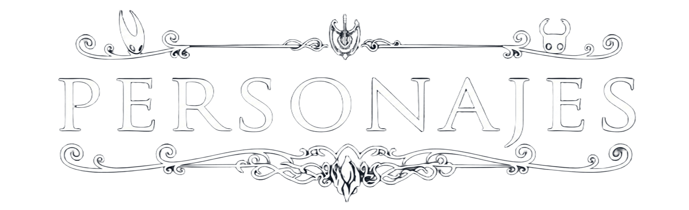
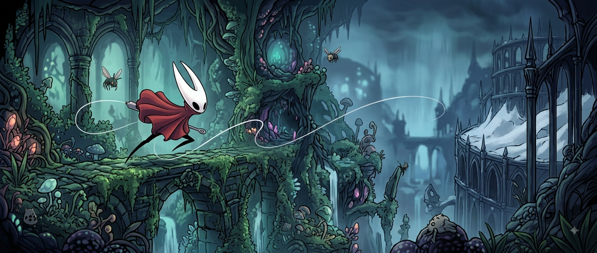
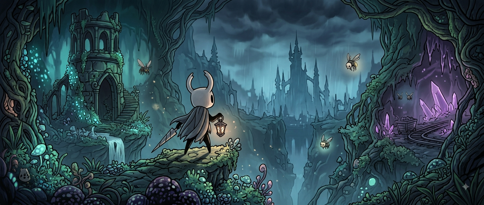

Hornet
Hornet es una guerrera ágil y habilidosa que protege Hallownest. Es hija del Rey Pálido y de Herrah la Bestia, y posee una importante conexión con la historia del reino.
Utiliza una aguja como arma y se caracteriza por su gran velocidad y capacidad de combate.

Quirrel
Quirrel es un viajero curioso que recorre las distintas regiones de Hallownest en busca de conocimiento y respuestas.
Durante su viaje se encuentra con el Caballero y lo ayuda a comprender algunos de los misterios del reino.

Grimm
Grimm es el líder de la Troupe Grimm, un grupo de misteriosos artistas que llega a Hallownest para realizar un antiguo ritual.
Es un personaje elegante y enigmático que pone a prueba al Caballero a través de diferentes desafíos.